Storytelling con Datos
¿Qué problema estamos intentando resolver?
Queremos anticiparnos al fracaso escolar y la deserción. Buscamos identificar qué factores determinan que un estudiante caiga en riesgo académico alto para poder realizar tutorías proactivas y focalizar el presupuesto de retención estudiantil de manera óptima.
¿Qué patrón importante apareció?
La modalidad de estudio define el nivel de riesgo.
- En clases Presenciales, solo el 5.44% presenta riesgo alto.
- En clases Virtuales e Híbridas, el riesgo alto asciende a **~12.9%** (¡más del doble!).
- El 82.44% de todos los alumnos en riesgo académico alto cursan bajo modalidades virtuales o híbridas.
- La variable conductual determinante es la asistencia, que cae a ~60.5% para el grupo de riesgo alto en la virtualidad.
¿Qué gráfico o métrica respalda el hallazgo?
Nuestros gráficos muestran una correlación lineal directa entre asistencia y nota final (r = 0.22), además del claro desplome de la asistencia de los alumnos virtuales con riesgo alto. Las horas de estudio declaradas y el trabajo no muestran influencia estadística.
¿Por qué importa?
Demuestra que el riesgo académico en educación virtual/híbrida no se debe a que el alumno trabaje o no estudie lo suficiente (las horas de estudio son idénticas en todos los niveles de riesgo: ~9.2 hrs), sino a un desenganche de asistencia y desconexión sistemática en el entorno virtual.
¿Qué recomendamos hacer ahora?
SATA (Sistema de Alertas Tempranas)
Gatillar alertas automáticas al tutor si el alumno en modalidad virtual cae abajo de 75% de asistencia.
Rediseño Virtual
Implementar dinámicas activas de participación obligatoria en clases sincrónicas.
Riesgo por Modalidad
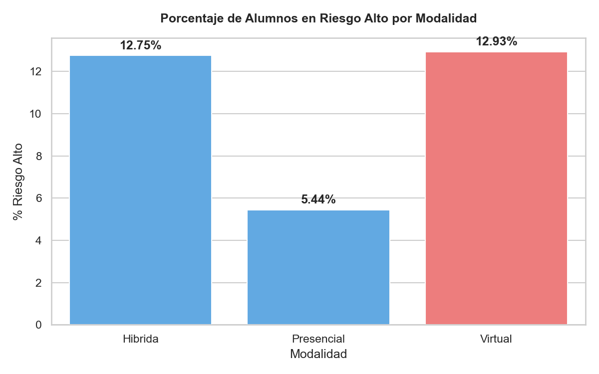
Asistencia por Riesgo y Modalidad
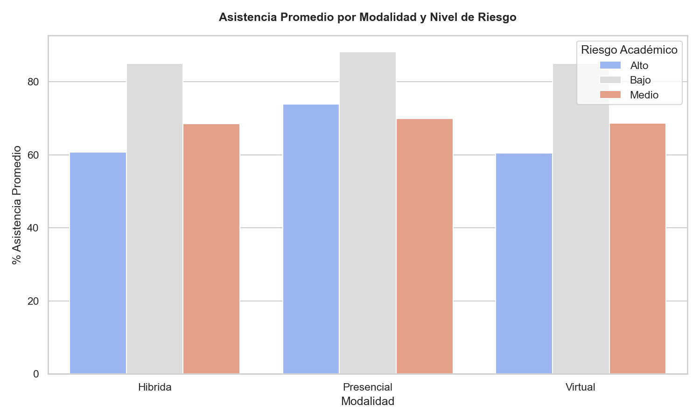
Matriz de Correlación
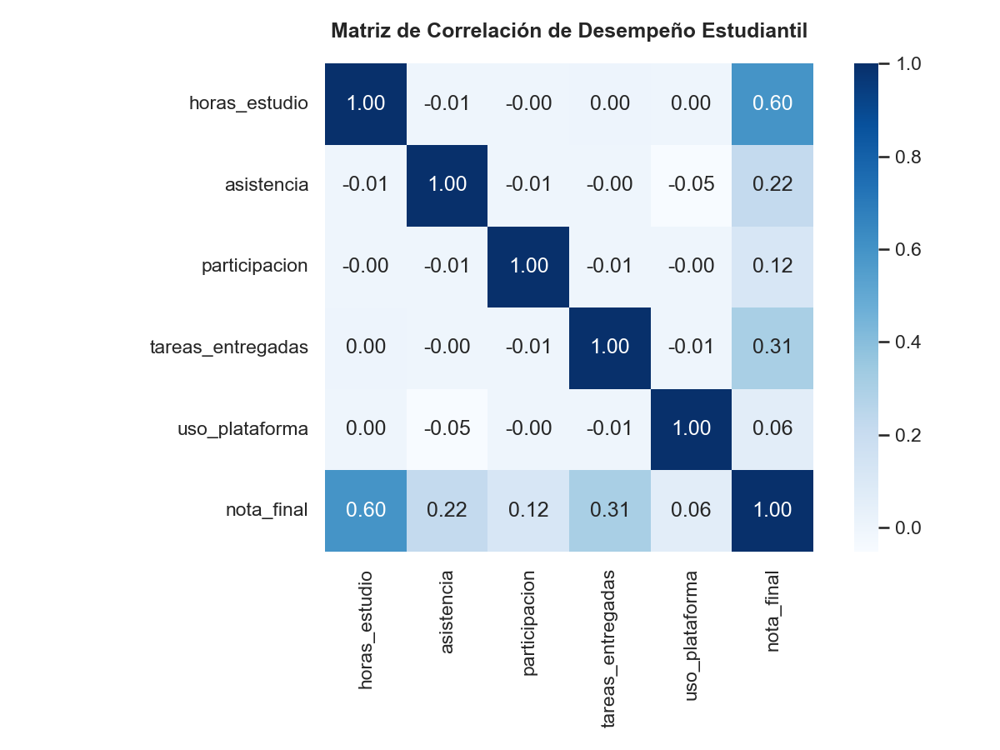
Reporte de Storytelling de Datos: Retencion y Riesgo Academico
Oficina de Ingenieria de Datos y Retencion Estudiantil
En base al analisis del conjunto de datos institucional de 800,000 registros de estudiantes (ulead_visualizacion_800k.csv), se presenta este reporte y la correspondiente aplicacion web interactiva para identificar patrones y guiar las decisiones de retencion academica.
1. ¿Que problema estamos intentando resolver?
El objetivo es identificar los factores criticos que determinan que un estudiante sea clasificado en Riesgo Academico Alto. Con este entendimiento, la institucion puede optimizar el despliegue de recursos de tutoria y apoyo academico de manera proactiva, previniendo la reprobacion y la desercion escolar.
2. ¿Que patron importante aparecio?
El analisis de los datos revela que la modalidad de estudio es la variable mas determinante del riesgo academico:
- Riesgo por Modalidad:
- Presencial: El riesgo academico alto es de solo el 5.44%.
- Virtual: El riesgo academico alto asciende al 12.93% (un incremento de mas del doble).
- Hibrida: El riesgo academico alto se situa en el 12.75%.
- Concentracion del Riesgo: El 82.44% de todos los alumnos de la institucion clasificados en riesgo alto cursan bajo modalidades virtuales o hibridas.
- Variable de Comportamiento Critica: La asistencia promedio de los alumnos en riesgo alto en las modalidades virtual e hibrida se desploma a ~60.5%, en contraste con el ~85.0% observado en los alumnos de bajo riesgo.
- Factores no Influyentes: El estatus laboral (trabajar o no) y las horas de estudio declaradas por semana no muestran diferencias estadisticamente significativas entre los distintos niveles de riesgo.
3. ¿Que grafico o metrica respalda el hallazgo?
- Distribucion de Riesgo por Modalidad:
- Presencial: 72.90% Bajo, 21.66% Medio, 5.44% Alto
- Hibrida: 50.96% Bajo, 36.29% Medio, 12.75% Alto
- Virtual: 50.69% Bajo, 36.38% Medio, 12.93% Alto
- Matriz de Correlacion:
- La entrega de tareas es la variable con mayor correlacion conductual positiva con la nota final (coeficiente de 0.31).
- La asistencia muestra una correlacion directa positiva con la nota final (coeficiente de 0.22).
4. ¿Por que importa?
Los resultados modifican la hipotesis de la institucion respecto a la educacion en linea. El bajo rendimiento en entornos virtuales o hibridos no se debe a la falta de tiempo de estudio o al empleo del estudiante, sino a la falta de compromiso y desenganche de asistencia en la virtualidad. Esto exige centrar las estrategias de retencion en el control de asistencia y alertas tempranas en lugar de simplificar el contenido academico.
5. ¿Que recomendamos hacer ahora?
Se sugieren tres acciones inmediatas:
- Implementar el Sistema de Alertas Tempranas de Asistencia (SATA): Activar notificaciones automaticas cuando un estudiante de modalidad virtual o hibrida registre una asistencia inferior al 75% en las primeras tres semanas del ciclo.
- Rediseño de Clases Virtuales e Hibridas: Incorporar actividades síncronas que requieran participacion y verificacion activa del estudiante en la plataforma.
- Focalizacion Presupuestaria: Asignar el 80% de los recursos de tutoria a estudiantes en modalidades no presenciales, dado que representan el 82.44% de la poblacion en riesgo.
1. ¿Como se distribuye la nota final?
El promedio general es de 93.20 con una desviacion estandar de 7.50. El valor minimo registrado es 55. La distribucion esta sesgada negativamente hacia calificaciones altas, con la mitad de los estudiantes (mediana) en 95 y el 25% superior alcanzando la nota maxima de 100.
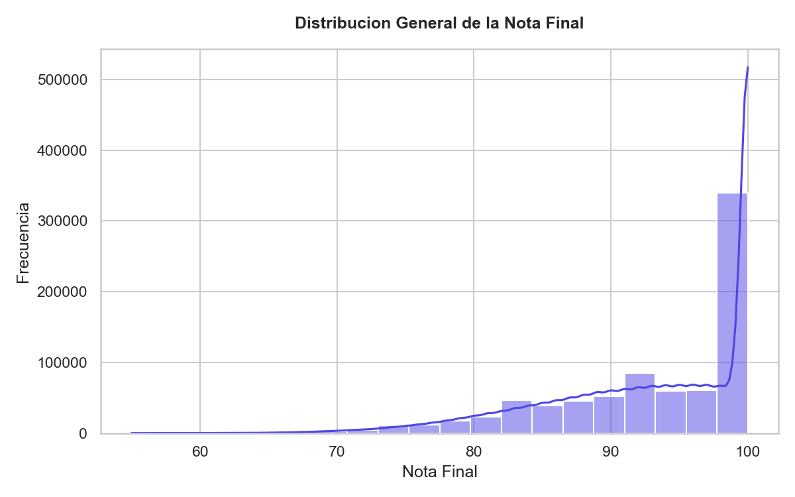
2. ¿Hay diferencias de nota final entre modalidades?
Las diferencias promedio son muy leves: Hibrida (93.55), Presencial (93.30) y Virtual (92.74). Sin embargo, la modalidad Virtual presenta la menor nota promedio y la mayor dispersion (desviacion estandar de 7.72), indicando que concentra calificaciones mas heterogeneas y extremas.
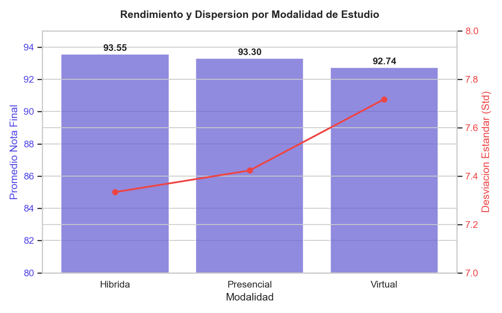
3. ¿Que carrera tiene mayor promedio de nota final?
Ciberseguridad registra el promedio mas alto con 93.23, seguida de cerca por Administracion con 93.20 y Data Science con 93.19. Las diferencias promedios entre todas las carreras del dataset no superan los 0.06 puntos.
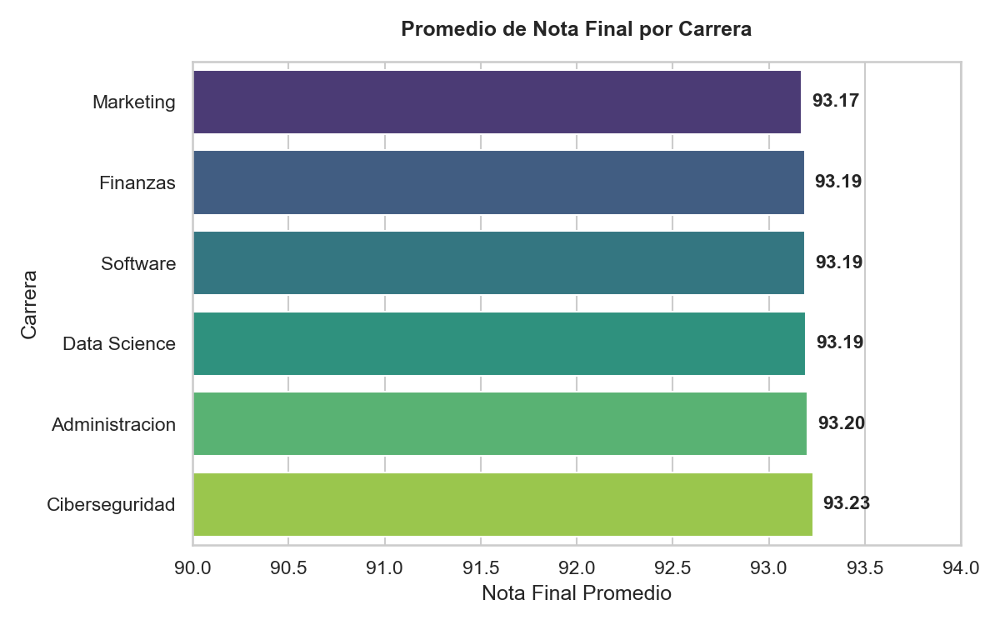
4. ¿Que carrera tiene mayor variabilidad en las notas?
La carrera de Finanzas presenta la mayor variabilidad con una desviacion estandar de 7.52, seguida por Data Science con 7.51. Ciberseguridad cuenta con la menor variabilidad con una desviacion estandar de 7.49.
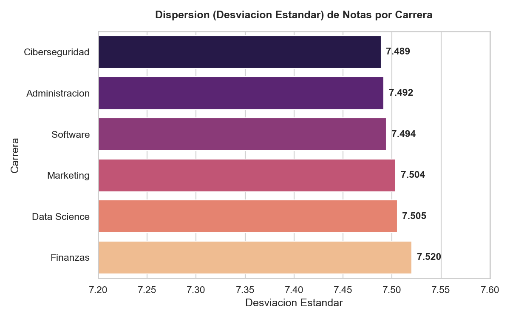
5. ¿Existe relacion entre horas de estudio y nota final?
Si, existe una relacion lineal positiva moderada-fuerte, con un coeficiente de correlacion de 0.5960. A mayores horas de estudio semanales, mayor es la calificacion final obtenida.
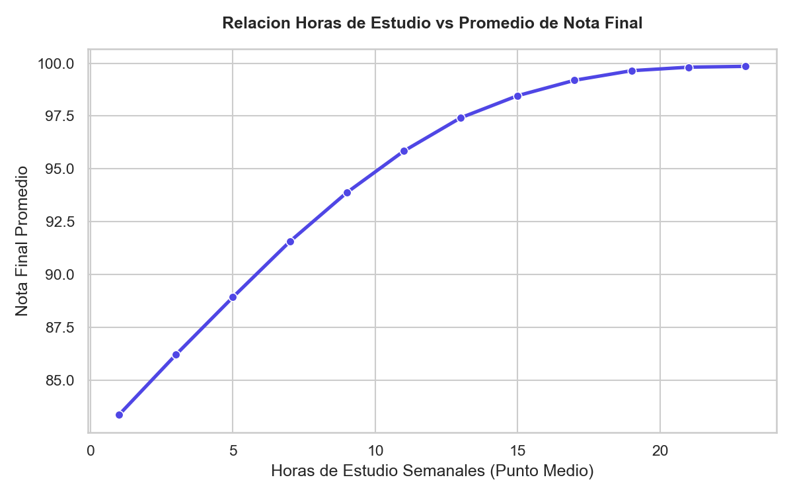
6. ¿Existe relacion entre asistencia y nota final?
Si, existe una relacion lineal positiva debil con un coeficiente de 0.2154. Aunque su asociacion directa es debil, es la variable clave que define el desenganche y riesgo de reprobacion de los alumnos en modalidades no presenciales.
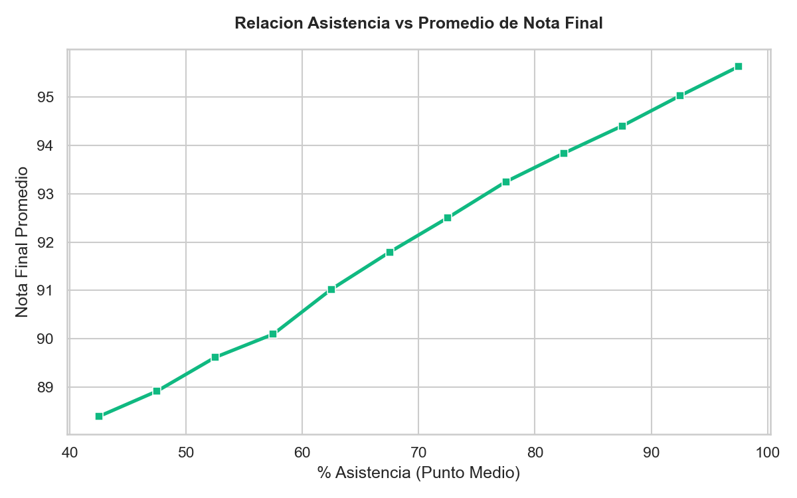
7. ¿Los estudiantes que trabajan tienen menor rendimiento?
Si. Los estudiantes que no trabajan promedian 96.32 en su nota final con una desviacion de 5.32, mientras que los estudiantes que si trabajan promedian 89.37 con una desviacion de 7.99. Representa una brecha de rendimiento de casi 7 puntos porcentuales.
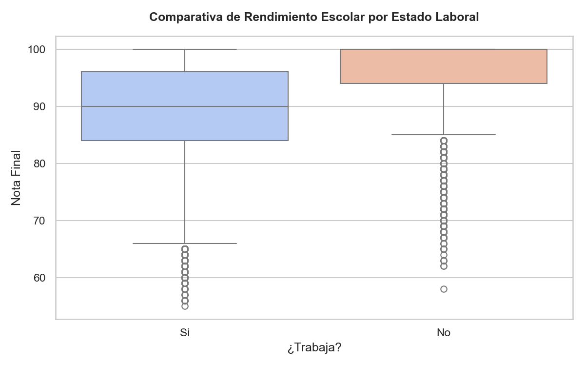
8. ¿Que campus concentra mayor riesgo academico?
El campus Virtual concentra tanto el mayor porcentaje de alumnos en riesgo alto (12.93%) como el mayor volumen absoluto (34,410 estudiantes en riesgo alto). Los campus fisicos promedian uniformemente un 9.0% de riesgo alto.
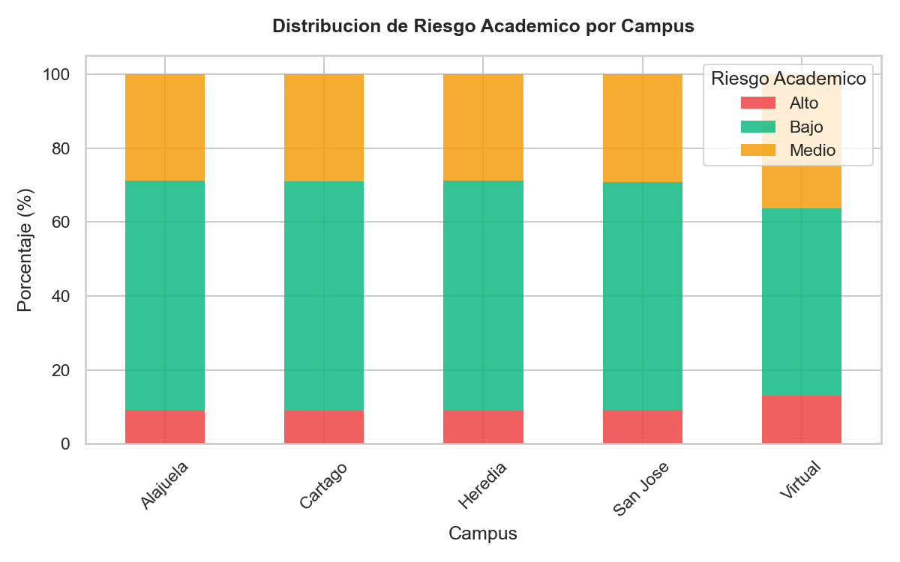
9. ¿El uso de plataforma se asocia con mejores notas?
La relacion lineal directa es sumamente debil (coeficiente de correlacion de 0.0616). Sin embargo, al segmentar por cuartiles de uso, el promedio de notas se incrementa levemente, pasando de 92.57 en el cuartil mas bajo a 93.78 en el de mayor uso.
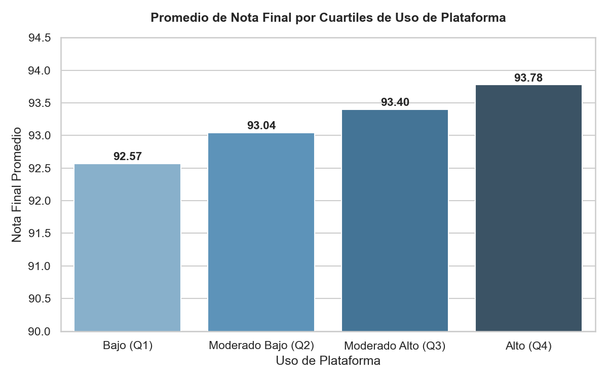
10. ¿Que recomendacion harian a ULEAD con base en los datos?
Se recomienda: 1) Activar alertas automaticas (SATA) al tutor ante caidas de asistencia abajo del 75% en virtual/hibrido. 2) Priorizar presupuesto de tutorias en el campus Virtual e Hibrido (representan el 82.44% del riesgo alto institucional). 3) Implementar entregas flexibles y tutorias asincronas para el segmento de estudiantes que trabajan, mitigando la brecha de rendimiento de 7 puntos.
Simulador de Riesgo Académico
Modifica los parámetros para predecir en tiempo real el riesgo de un alumno.
Ajusta los valores para calcular la probabilidad.